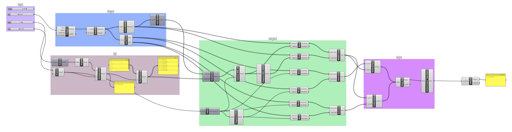
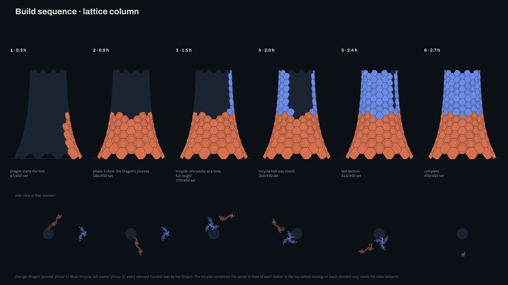
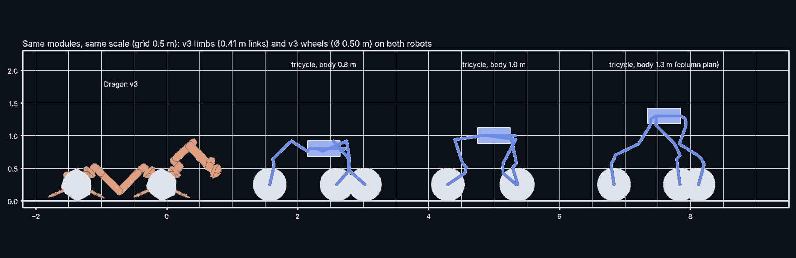
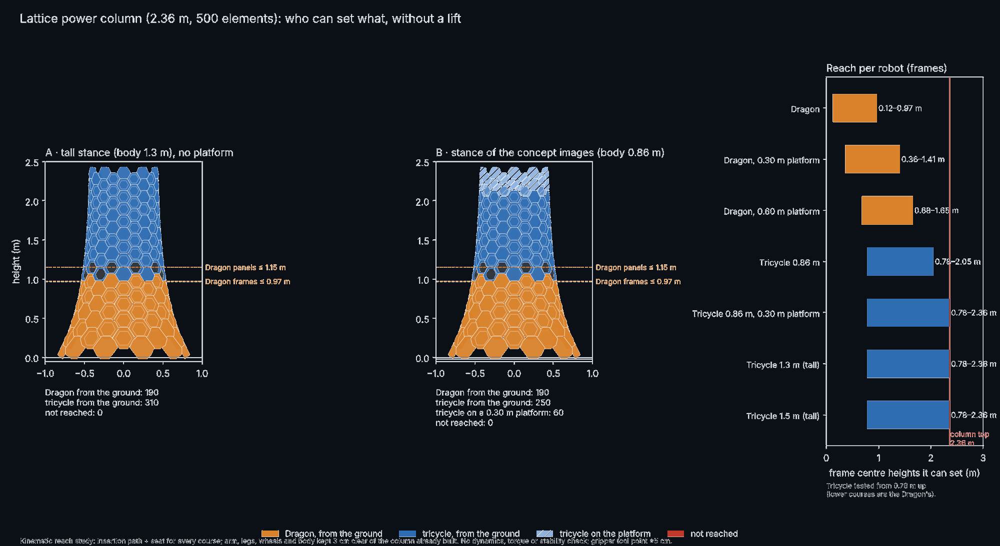
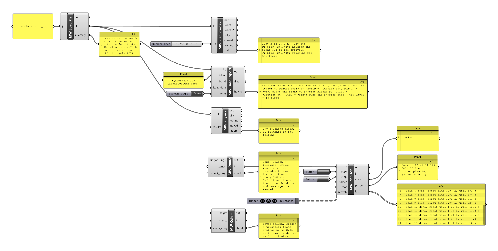
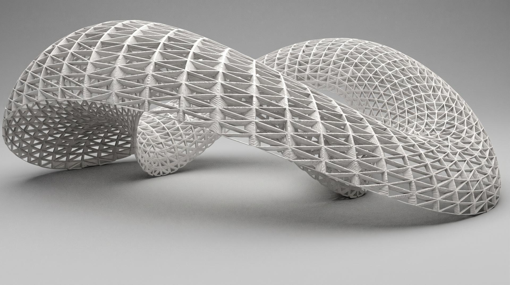
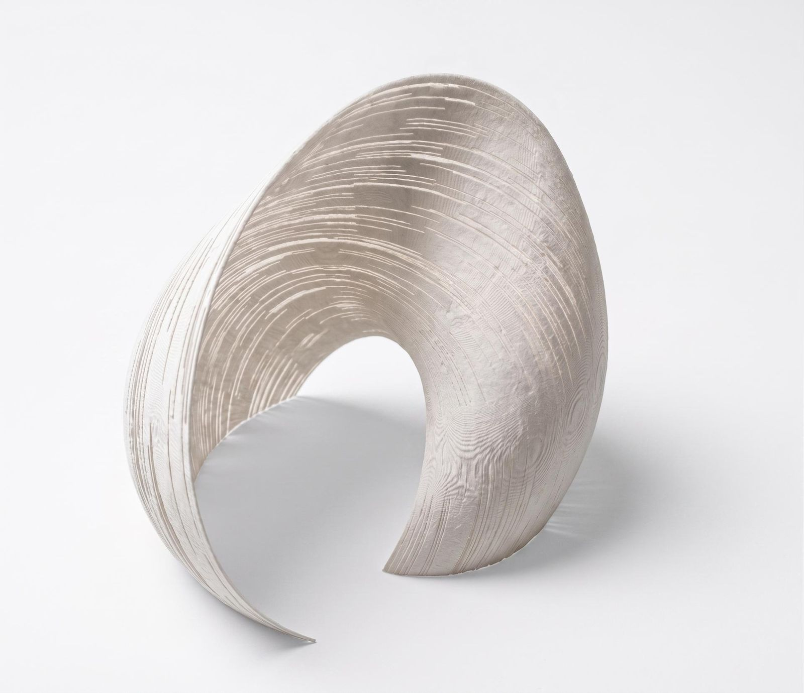
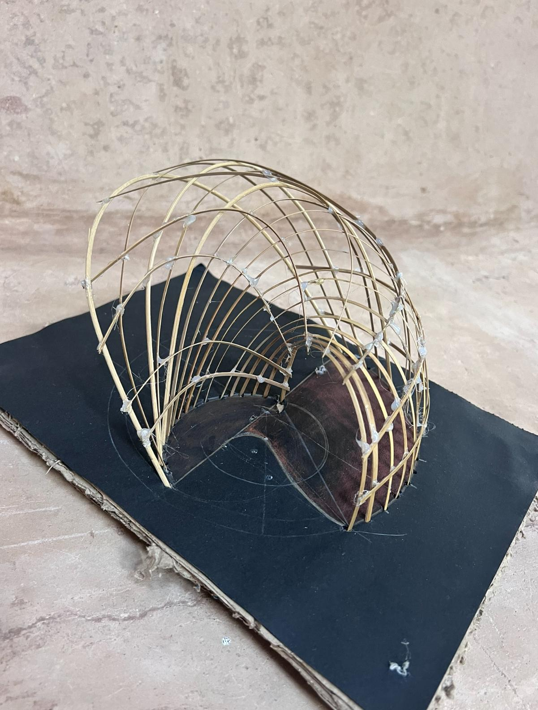
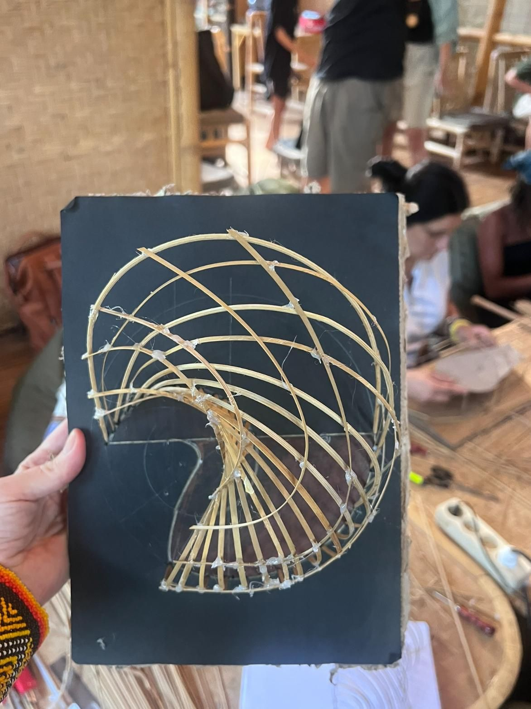

SELECTED WORKS 2016–2026
COMPUTATIONAL DESIGN PORTFOLIO
Contents
02
Contents
- — Curriculum Vitae Experience · Education · Skills p.03
- 01 Moonwalk 2.0 — Autonomous Robotic In-Situ Lunar Construction Tohoku University Space Robotics Lab · Topological Interlocking Regolith Structures · 4D BIM & Physics Validation p.04
- 02 UMBRELLA · Real-Time Digital Twin Supervisory Control Architecture · UE5/AirSim Digital Twin p.08
- 03 Distributed Exploration of Titan’s Organic Chemistry 9-Agent Swarm · Adaptive Task Planning · Full MBSE p.11
- 04 Computational Design & Resilience Storm-Resilient Buildings · X-BIM Suite · Real-Time Dashboard p.15
- 05 Orbital Gateway Construction Consensus Coordination · In-Orbit Assembly · Digital Twin p.18
- 06 NEOM Multimodal Mobility Hubs Autonomous Interchange · Zero-Carbon Transit · Occupant Sensing p.21
Nina Velimirovic — Portfolio 2026
p. 02
Curriculum Vitae
03
Professional Experience
Visiting Researcher & Space Systems Architect
Tohoku University Space Robotics Laboratory · Sendai, Japan
2026
Lead architectural and computational researcher on Moonwalk 2.0: autonomous robotic in-situ lunar construction utilizing topologically interlocking regolith block families (Dyskin/Yong osteomorphic geometry). Formulated 4D BIM multi-robot task planners for MoonBot Dragon fleets, automated kinematics verification, and end-to-end physics validation in NVIDIA Isaac Sim under lunar gravity.
Mobility Hubs & Urban Masterplanning Manager
NEOM · Saudi Arabia
Sep 2022 – Sep 2025
Designed architectural and digital systems for zero-carbon automated mobility networks. Embedded digital infrastructure and sensors for passenger flow optimisation and autonomous vehicle routing. Directed human-flow logic and interface legibility in complex multi-level automated interchange hubs.
Transit Architecture Lead · Underground Infrastructure
WSP · International Transit Practice
Apr 2016 – Aug 2022
Led architectural design management of automated underground transit systems on behalf of the project management consultancy, directing and coordinating five architecture firms through design development, review, and approval. Ensured spatial consistency, regulatory compliance, platform screen doors, automated safety gates, and autonomous transit control and wayfinding interface systems.
Architect · 3D Clash Detection & Roadway Design
WSP / Middle East · Doha, Qatar
Jan 2015 – Jan 2016
Developed 3D underground utility simulations and spatial clash coordination for Qatar's Expressway programme.
Architect & 3D Designer
Foster + Partners / MJL · London, UK
Jan 2014 – Jan 2015
BIM coordinator on Bloomberg's $50M European HQ designed by Foster + Partners.
Scan for Interactive Portfolio
Simulations · Live Dashboards · Digital Twins
arhimatrix.github.io/portfolio
Education
MSc Architecture & Urban Planning
University of Novi Sad, Faculty of Technical Sciences · Serbia
Computational geometry, architectural theory, and urban systems.
MSS Space Engineering & Applications
International Space University · Strasbourg, France · 2025–2026
Space architecture, space systems, planetary robotics.
Executive Education: The Walkable City
Harvard Graduate School of Design · 2024
Urban design, walkable networks, micro-mobility integration.
Emerging Design & Technology: Beyond Smart Cities
MIT · 2023
Sensor networks, responsive materials, computational design at urban scales.
Professional Specialization: System Architecture
MIT · 2017
Model-Based Systems Engineering, dynamic system modeling, lifecycle design.
Computational Skills
Python
Advanced
Agentic AI (Claude API / Gemini API)
Advanced
UE5 / AirSim
Advanced
Grasshopper / Rhino 8
Advanced
3ds Max
Advanced
AutoCAD
Advanced
MBSE
Advanced
Revit / BIM / Navisworks
Advanced
ROS 2
Proficient
EEG / Human Performance Analysis
Proficient
STK
Proficient
C# / .NET
Proficient
Nina Velimirovic — Portfolio 2026
p. 03
Chapter 01 · Autonomous Robotic Assembly & In-Situ Construction Automation
Moonwalk 2.0
Autonomous In-Situ Lunar Construction & Interlocking Regolith Structures
Tohoku University Space Robotics Laboratory · Autonomous Multi-Robot Assembly · Topological Interlocking Osteomorphic Blocks · 4D BIM & NVIDIA Isaac Sim Physics Validation
An end-to-end cyber-physical construction framework for permanent lunar infrastructure at the lunar south pole: autonomous mobile robots (MoonBot Dragon) fabricating landing pads, vertical solar towers, and pressurized habitat vaults from dry-stacked interlocking regolith blocks without on-site human presence.
An end-to-end cyber-physical construction framework for permanent lunar infrastructure at the lunar south pole: autonomous mobile robots (MoonBot Dragon) fabricating landing pads, vertical solar towers, and pressurized habitat vaults from dry-stacked interlocking regolith blocks without on-site human presence.
01
Ch.01 · Moonwalk 2.0 · Tohoku University Space Robotics Lab
p. 04
Ch.01 · Moonwalk 2.0 · Tohoku University Space Robotics Lab
05
Research Overview · Space Robotics Laboratory, Tohoku University · 2026
Moonwalk 2.0 develops a fully autonomous in-situ construction pipeline for permanent lunar infrastructure — directly advancing ARCA Lab's core agenda of robotic construction automation applied to extreme environments. Conducted at Tohoku University Space Robotics Lab, the project addresses the full fabrication stack: south-pole site selection & terrain analysis (Connecting Ridge / de Gerlache Rim 2 within ispace Mission 4's ≥87°S landing band), parametric design of a topologically interlocking regolith block family in Rhino 8 / Grasshopper, multi-robot cooperative task scheduling compiled to 8 atomic operation verbs, and closed-loop physics validation in NVIDIA Isaac Sim — producing a replicable, geometry-agnostic robotic assembly protocol for unreinforced granular material.
- Topological Interlocking Block Family: Formulated parametric osteomorphic and 6-tilt hexagonal block families (Dyskin et al. 2003, 2005; Yong 2011). Non-planar contact faces (0° to 35.3° cube-corner tilt) lock adjacent elements purely in compression without mortar or adhesives, eliminating thermal fracture risks across extreme cryogenic diurnal cycles (ΔT > 250 K).
- Robot-Block Interface Architecture: Developed and evaluated three distinct end-effector interface modules: Option 1 (Flush Side Handle) matching the lab's C-jaw bar gripper; Option 2 (Top Twist-Lock Slot) using a T-key vertical entry with 90° wrist form-lock; and Option 3 (Top Pocket Grip) utilizing linear slide fingers expanding against pocket walls. Top-gripping effectors leave all side faces free, enabling zero-clearance adjacent placement across pavements, walls, columns, and vaults.
- Self-Aligning Assembly: Concave-convex geometry guides misplaced blocks into equilibrium as they seat, compensating for robot manipulation inaccuracies under 1/6th gravity.

Rhino 8 / Grasshopper Parametric Definition · Inputs → Hexagon → Alternating Side Tilt (0°–35.3°) → Block Family Generator
Ch.01 · Moonwalk 2.0 · Tohoku University Space Robotics Lab
p. 05
Ch.01 · Moonwalk 2.0 · Tohoku University Space Robotics Lab
06
Multi-Robot Cooperative 4D BIM · MoonBot Dragon Architecture
The core contribution is a geometry-agnostic robotic construction compiler. Each building element is encoded as an
IfcBuildingElementPart linked to IfcTask schedules and robot resource allocations, then compiled into 8 atomic operation verbs. The primary constructor is the MoonBot Dragon — a modular rover developed at Tohoku University SRL featuring a 7-DOF articulated manipulator and holonomic base. Kinematic reachability, collision-free lanes, and stability margins are computed in Grasshopper and handed off to ROS 2 Motion Stack — requiring zero human presence on-site.
Constructability Benchmarks: Pad, Dome & Power Columns
- •Landing Pad (283 Pavers): Laid centre-out along radial ring roads. Tandem paving (2 placers) cut build time from 9.90h to 3.89h (2.5× speedup) across 10,942 planned operations with zero clashes.
- •ShellA Dome (194 Blocks, 4.8m Span): Built inside-out through its own 0.95m airlock opening without scaffolding; exterior Dragon hauler hands off to interior Tricycle (1.58h).
- •2.5m Power Columns (450 Elements): Tandem rovers reconfigure into tall-stance Tricycle (2.13m reach) without cranes, delivering ~1.3 kW per column.

Landing Pad Assembly Sequence · 283 Pavers · Two Dragons Start Together, Centre-Out Tandem Paving (3.89 h, 10,942 Ops)

ShellA Dome Assembly · Dragon Outside + Tricycle Inside (1.58 h)

2.5m Power Column · Tandem Multi-Robot Stacking (2.70 h)

MoonBot Dragon Modular Robotics Architecture · 7-DOF Arm & Stances

7-DOF Manipulator Inverse Kinematics & Vertical Reach (1.1m → 2.13m)
Ch.01 · Moonwalk 2.0 · Tohoku University Space Robotics Lab
p. 06
Ch.01 · Moonwalk 2.0 · Tohoku University Space Robotics Lab
07
The Moonwalk Grasshopper Plugin · Construction Automation Pipeline
The Moonwalk Grasshopper Plugin operationalizes the construction compiler as a native Rhino 8 / Grasshopper workflow — directly relevant to ARCA Lab's digital fabrication and robotics research agenda. Architects define site parameters (
MW Site), block geometry (MW Blocks), and structural typologies (MW Dome, MW Column), then launch background multi-robot scheduling (MW Plan Job), preview 4D robot states on a time slider (MW Plan Preview), export USD scenes (MW Isaac Export), and ingest physics displacements directly back to the canvas (MW Physics).
Closed-Loop Discovery · Isaac Sim Physics Validation (1/6th g)
Plans execute in NVIDIA Isaac Sim (PhysX 6.1) under 1.62 m/s² lunar gravity, friction μ = 0.7, and 1,900 kg/m³ regolith density. Displacement telemetry colours every block in Grasshopper in real time:
• Dome Door Failure Discovery: Dry-stacked simulation revealed that the airlock opening breaks the compression hoop, causing 73 of 194 blocks to collapse when staples were removed. Adding an arch frame and locking pins achieved 194/194 held within 5 mm (0 fell).
• Power Column: 450/450 elements verified stable within 5 mm; zero physical trials required.
• Dome Door Failure Discovery: Dry-stacked simulation revealed that the airlock opening breaks the compression hoop, causing 73 of 194 blocks to collapse when staples were removed. Adding an arch frame and locking pins achieved 194/194 held within 5 mm (0 fell).
• Power Column: 450/450 elements verified stable within 5 mm; zero physical trials required.
02 · Plugin Architecture
Five layers, one plan file in the middle
Grasshopper plans → Motion Stack moves → Isaac Sim validates → results come back
L1
Canvas
Grasshopper components the architect works with (
MW Site, MW Dome, MW Column)L2
Core library
Parametric design, multi-robot kinematics (Dragon, Tricycle) & scheduling
L3
Compiler
Turns architectural geometry into atomic robotic operations
WAIST
Plan file
8 operation verbs (
DRIVE, TURN, ARM_JOINTS, GRIP, SIGNAL), robots synced by signalsL4
Executors
Isaac Sim validates physics · ROS 2 Motion Stack moves real hardware
L5
Read-back
Displacement results colour the design directly in Grasshopper

Moonwalk Rhino 8 / Grasshopper Canvas · MW Load Plan · MW Plan Preview · MW Isaac Export · MW Physics · MW Plan Job
Ch.01 · Moonwalk 2.0 · Tohoku University Space Robotics Lab
p. 07
02

Chapter 02 · Supervisory Digital Twin & Autonomous Field Robotics
UMBRELLA · Real-Time
Digital Twin
Digital Twin
Supervisory Control Architecture · UE5/AirSim Digital Twin
Real-time digital twin framework for autonomous multi-robot field coordination, supervisory monitoring architecture, and closed-loop sensor feedback validated on Mars-analogue terrain simulation.
Ch.02 · UMBRELLA · Real-Time Digital Twin
p. 08
Ch.02 · UMBRELLA · Real-Time Digital Twin
09
System Architecture · Multi-Robot Autonomous Field Mapping
Autonomous multi-robot mapping on Mars-analogue terrain introduces a core distributed coordination problem: a six-wheeled rover and an autonomous aerial drone must coordinate semi-autonomously across complex terrain while an Earth-based operator maintains situational awareness of both systems under communication lag. The operator must track robot position, coordination state, and sensor health — and retain the ability to issue override commands at any point in the mission.
The UMBRELLA system architecture addresses this challenge through two formally defined subsystems. The Mobility Subsystem governs localisation, path planning, and actuator control — providing the real-time telemetry stream the supervisory interface uses to display robot state. The Communications System manages inter-vehicle data-link, science data relay, and ground-segment uplink — ensuring the operator retains command authority and can monitor link health at all times. Both subsystems were formally defined in the MBSE framework so they could be validated in digital twin simulation before deployment.
The UMBRELLA system architecture addresses this challenge through two formally defined subsystems. The Mobility Subsystem governs localisation, path planning, and actuator control — providing the real-time telemetry stream the supervisory interface uses to display robot state. The Communications System manages inter-vehicle data-link, science data relay, and ground-segment uplink — ensuring the operator retains command authority and can monitor link health at all times. Both subsystems were formally defined in the MBSE framework so they could be validated in digital twin simulation before deployment.
UMBRELLA Mobility Subsystem Architecture — Localisation, Navigation & Locomotion Control

UMBRELLA Comms System Architecture — Rover, Drone, Deep Space Link & Air Interface
Ch.02 · UMBRELLA · Real-Time Digital Twin
p. 09
Ch.02 · UMBRELLA · Real-Time Digital Twin
10
Project Overview · Systems Lead · Strasbourg 2025–2026
Validated the UMBRELLA system architecture by simulating both Mobility and Communications subsystems in Mars-terrain conditions using a digital twin built from NASA MOLA heightmap data and AirSim physics — calibrating Martian gravity, surface friction, atmospheric density, and full sensor suites (RGB-D, IMU, LiDAR).
Designed the supervisory interface to display system architecture state in real-time, enabling operators to visualise robot task sequences, sensor degradation events, SLAM map state, and communication link health — and intervene via override commands through a closed-loop ROS 2 bridge.
Designed the supervisory interface to display system architecture state in real-time, enabling operators to visualise robot task sequences, sensor degradation events, SLAM map state, and communication link health — and intervene via override commands through a closed-loop ROS 2 bridge.
- —Validated both subsystems using NASA MOLA terrain and AirSim physics — calibrating gravity, friction, atmosphere, and sensor suites under Mars conditions.
- —Designed the supervisory interface to translate architecture state into operator-readable displays: real-time telemetry at 50 Hz, degradation alerts, SLAM map updates, and link status across rover and drone.
- —Implemented closed-loop feedback: override commands propagate via AirSim-to-ROS 2 bridge, update the digital twin state, and return updated telemetry in real time.
- —Designed Blackboard data-sharing for leader-follower coordination, enabling rover and drone to share SLAM state while the operator monitors and intervenes in visual degradation scenarios.

UE5 Martian Terrain Calibration · NASA MOLA DEM · SkyAtmosphere & AirSim Physics Setup
NASA MOLA
Heightmap DEM
16-bit terrain data
UE5 / AIRSIM
Physics Sim
RGB-D · IMU · LiDAR
ROS 2 BRIDGE
SLAM / Control
Path planning nodes
SUPERVISOR HMI
Override Interface
Supervisory Override
Key Metrics
50Hz
Real-time telemetry loop
9×
Simultaneous agents
3D
Sensor suites calibrated
Ch.02 · UMBRELLA · Real-Time Digital Twin
p. 10

Chapter 03 · Planetary Robotics & Autonomous Systems & Autonomous Systems
Distributed Exploration of Titan's
Organic Chemistry
Organic Chemistry
A Cooperative Hybrid-Agent Swarm Mission
Multi-agent coordination, adaptive task planning, decentralized consensus protocols, and high-fidelity swarm simulation for Titan’s prebiotic terrain mapping.
03
Ch.03 · Distributed Exploration of Titan's Organic Chemistry
p. 11
Ch.03 · Distributed Exploration of Titan's Organic Chemistry
12
Project Overview · Project Lead & Simulation Lead
A cooperative swarm of nine autonomous hybrid agents addresses a core distributed-autonomy coordination problem: how does a multi-robot system maintain coherent task execution when communication is delayed or disrupted, agent behaviors are partially decoupled, and swarm state is distributed across nine independent platforms? Designed for Titan’s’s prebiotic terrain mapping, the project spanned the full development arc: (1) CAD design of a novel dual-mode robotic agent capable of both wheeled surface traversal and aerial flight, (2) systems architecture for decentralized multi-agent coordination using MBSE, ROS 2, and consensus algorithms with supervisory override capability, and (3) high-fidelity swarm simulation in Unreal Engine 5, with coordination logic validated on physical CrazyFlie hardware.
- Designed the dual-mode hybrid agent in CAD — a single platform combining wheeled locomotion for surface science with rotor-based flight for terrain crossing and repositioning — resolving the mass, power, and mechanism trade-offs between the two mobility modes (see orthographic and exploded assemblies, FIG.04.C–D).
- Built the full-swarm simulation in Unreal Engine 5: nine agents operating over Titan-analog terrain, testing mode-switching behavior, terrain-adaptive task allocation, and swarm coordination under simulated communication delay and disruption.
- Programmed adaptive task-planning and leader-election algorithms with human-interrupt capability: supervisory operators can inject override commands mid-consensus, with the delay-tolerant mesh ensuring command propagation even under disruption — validated on physical CrazyFlie hardware under real communication constraints.
- Applied MBSE to trace 35 system requirements through FMECA, mass/power/data link budgets, and agent behaviour models — ensuring coordination logic and override failure modes were explicitly designed and validated.


Ch.03 · Distributed Exploration of Titan's Organic Chemistry
p. 12
Ch.03 · Distributed Exploration of Titan's Organic Chemistry
13

Orthographic CAD Profiles (Front, Side, Back)

Exploded CAD Assembly & Component Specs
Ch.03 · Distributed Exploration of Titan's Organic Chemistry
p. 13
Ch.03 · Distributed Exploration of Titan's Organic Chemistry
14

Parametric Agent Configuration

UE5 Exploration Simulation · Titan Prebiotic Terrain Mapping
Ch.03 · Distributed Exploration of Titan's Organic Chemistry
p. 14

04
Chapter 04 · Computational Design & Resilience
Computational Design
& Resilience
& Resilience
Storm-Resilient Buildings · X-BIM Suite · Real-Time Dashboard
Spatial simulation and monitoring dashboards to evaluate building performance under extreme environmental stress. Custom Python/Streamlit plugins combining BIM structural data with real-time sensor streams.
Ch.04 · Computational Design & Resilience
p. 15
Ch.04 · Computational Design & Resilience
16
Mantis · Computational Resilience Design · Designer-in-the-Loop
While earlier projects address autonomous robotic systems with supervisory control protocols, computational design represents a complementary automation paradigm: algorithms augmenting design expertise by simultaneously evaluating hundreds of configurations for multi-hazard resilience — producing unintuitive optimised forms that manual search cannot reach.
Buildings face compounding climate risks — wildfire, flood, hurricane, seismic loading, extreme heat — that traditional design methods cannot address simultaneously. Computational design explores hundreds of configurations simultaneously, identifying unintuitive resilient forms that human intuition alone would not reach.
Buildings face compounding climate risks — wildfire, flood, hurricane, seismic loading, extreme heat — that traditional design methods cannot address simultaneously. Computational design explores hundreds of configurations simultaneously, identifying unintuitive resilient forms that human intuition alone would not reach.
- —Developed Mantis to resolve the multi-hazard optimisation problem: integrating real-time geospatial risk feeds for any latitude/longitude input, computing a localized vulnerability index — replacing assumption-based design with evidence-based hazard profiling.
- —Implemented parametric optimization testing 500+ building configurations per hazard profile, generating hazard-specific modules.
- —Maintained designer-in-the-loop control: Mantis surfaces optimal configurations for architect review — computation identifies candidates, the architect contextualises and approves.
- —Integrated X-BIM real-time sensor dashboard to close the validation loop: structural health and resilience margin monitored live against design predictions, feeding field data back into Mantis.

Ch.04 · Computational Design & Resilience
p. 16
Ch.04 · Computational Design & Resilience
17
Simulation & Real-Time Monitoring · Validation Pipeline
The Mantis design-to-monitoring pipeline closes the evidence loop: parametric designs are stress-tested through evolutionary simulation before construction, then validated post-occupancy through embedded sensor networks linked to the X-BIM digital twin dashboard — enabling facility managers to detect structural drift, environmental deviation, and resilience margin erosion in real time.
Ch.04 · Computational Design & Resilience
p. 17
05

Chapter 05 · In-Orbit Construction & Autonomous Assembly
Orbital Gateway
Construction
Construction
Consensus Coordination · In-Orbit Assembly · Digital Twin
Computational coordination logic for robotic in-orbit assembly sequences at the Lunar Gateway. Multi-robot consensus algorithms, structural tolerancing, and digital twin dashboards.
Ch.05 · Orbital Gateway Construction
p. 18
Ch.05 · Orbital Gateway Construction
19
Project Overview · Systems Architecture Lead
Robotic in-orbit assembly of complex spacecraft at the Lunar Gateway presents a fundamental autonomous coordination challenge: modules manufactured by distributed contractors must be assembled by coordinated robot teams under supervisory oversight — with no margin for error in microgravity.
The design strategy centred on standardized modular interfaces: defining exact mechanical, electrical, and informational specifications enabling distributed fabrication with standardized specifications across independent manufacturing chains. The work integrated interface design (docking geometry, electrical handshakes, capture mechanisms), computational algorithms for robotic assembly coordination (sequencing, tolerance budgeting, multi-robot consensus), and supervisory protocols enabling operators to monitor progress, recognise deviations, and intervene at contingency points.
The design strategy centred on standardized modular interfaces: defining exact mechanical, electrical, and informational specifications enabling distributed fabrication with standardized specifications across independent manufacturing chains. The work integrated interface design (docking geometry, electrical handshakes, capture mechanisms), computational algorithms for robotic assembly coordination (sequencing, tolerance budgeting, multi-robot consensus), and supervisory protocols enabling operators to monitor progress, recognise deviations, and intervene at contingency points.
- Designed standardized modular interfaces specifying docking geometry, electrical connections, and informational handshakes — enabling distributed fabrication across independent contractors without custom fit-up, and making assembly state legible to supervisory operators.
- Applied evolutionary solvers optimising interface tolerances across distributed manufacturing, simulating worst-case cumulative stack-up to ensure capture mechanisms succeed and structural margins are preserved under all tolerance scenarios.
- Programmed consensus-coordination algorithms for multi-robot assembly sequencing — leader election, supervisory override protocols, anomaly recovery — validated through digital twin simulation of microgravity dynamics and docking loads.
- Built real-time data pipelines exporting live fabrication tolerances and assembly states to digital twin dashboards, supporting user evaluation of supervisory interface legibility and contingency decision timelines.
ASSEMBLY / ORBITAL_SEQ.PY
Python 3.11
def orbital_assembly(modules, fleet):
sequence = plan_assembly_order(modules)
for module in sequence:
robot = assign_robot(fleet, module)
robot.dock(module, tolerance=0.002)
verify_structural_lock(module)
update_digital_twin(module.state)

Ch.05 · Orbital Gateway Construction
p. 19

06
Chapter 06 · Mobility & Infrastructure Intelligence
NEOM Multimodal
Mobility Hubs
Mobility Hubs
Human-Machine Interface · Zero-Carbon Transit · Occupant Sensing
Sensor-embedded public realm, real-time occupant flow monitoring, and interface legibility design for automated driverless interchange hubs in NEOM's 170km network.
Ch.06 · NEOM Multimodal Mobility Hubs
p. 21
Ch.06 · NEOM Multimodal Mobility Hubs
22
Project Overview · NEOM · Saudi Arabia · 2022–2025
NEOM’s 170km mobility network presents a core autonomous systems integration challenge: thousands of daily occupants must navigate driverless interchange hubs where autonomous vehicles, robotic maintenance systems, and pedestrians dynamically share constrained public space. The design task required a three-stage methodology: (1) behavioral mapping through occupant sensing and user studies, (2) synthesis of interface logic to communicate robot intent and safety states, and (3) computational form-finding to scale responsive spatial and visual systems across multiple hub typologies.
- Conducted user study methods and spatial behavioral mapping to evaluate interface legibility: how occupants perceive vehicle approach state, understand safety zones, and navigate without human operators or signage.
- Designed integrated sensor networks for real-time occupant flow monitoring and autonomous vehicle routing, feeding live data into adaptive wayfinding systems.
- Developed the autonomous-system communication layer: visual, spatial, and acoustic cues communicating robot operational intent — differentiating active vehicle zones from pedestrian concourses.
- Transitioned from system-level masterplanning to parametric exploration: using behavioral feedback to drive computational form-finding for adaptive canopy structures and dynamic wayfinding elements.
Integrated Multimodal Mobility Simulation
Transit Interchange Simulation
Neom Integrated Multimodal Mobility System

NEOM Integrated Multimodal Mobility System — Developments, Infrastructure & Hubs
Ch.06 · NEOM Multimodal Mobility Hubs
p. 22
Ch.06 · NEOM Multimodal Mobility Hubs
23
The Central Problem: Behavioral Legibility in Autonomous Hubs
A fully autonomous hub removes the on-site operator layer entirely — occupants must infer system state and vehicle behavior from spatial and architectural cues alone. The design methodology began with behavioral mapping: occupant trace studies and user studies evaluating different interface configurations, informing a multi-layered digital and spatial system:
Integration of Digital Operations with Physical Space
- Real-Time Occupant Monitoring: Sensor networks track pedestrian density and flow velocity, feeding predictive occupancy models for real-time routing and environmental control.
- Adaptive Interface Logic: Wayfinding adjusts spatial indicators based on live occupant behavior and vehicle scheduling — replacing static signage with context-aware navigation cues.
- Synchronized Safety Zones: Vehicle approach states and docking sequences communicated through coordinated spatial, acoustic, and visual signals.
From Strategy to Computational Form: Scaling Legible Interfaces
- Occupancy-Responsive Geometry: Structural ribs and clearance profiles parametrically linked to pedestrian density — high-traffic zones received extended canopy coverage and enhanced visual contrast.
- Manufacturing Scalability: Parametric definitions generated site-specific configurations maintaining a consistent structural typology, exporting fabrication-ready geometry for additive manufacturing and CNC.
- Interface Coherence: Color gradients, rib spacing, and material transitions synchronized across all hub sites, creating a unified experiential language adapting to local site constraints.
Systems Integration: Cognitive BOH Layer & Concourse FOH Interfaces
Pedestrian Flow Simulation: Real-Time Dynamic Routing Indicator


Morphological Prototypes: Multi-Scale Station Shells & Structural Canopy Forms
Ch.06 · NEOM Multimodal Mobility Hubs
p. 23
Ch.06 · NEOM Multimodal Mobility Hubs
24


Front Elevation: Undulating Torus Canopy
Perspective View: 3D-Printed Structural Shell

Grasshopper Parametric Definition: Sub-D Grid & Structural Relaxation

Crescent Form Generation & Geometric Evolution Steps
Ch.06 · NEOM Multimodal Mobility Hubs
p. 24
Ch.06 · NEOM Multimodal Mobility Hubs
25

Isometric View: Rotated Structural Shell
Perspective View: Segmented Façade Prototype

Grasshopper Parametric Definition: Segmented Façade Pattern Generation
Animated Simulation: Rotated Shell Canopy & Driverless Hub




Physical Model: Timber Rib Wireframe & Assembly
Ch.06 · NEOM Multimodal Mobility Hubs
p. 25